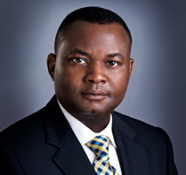
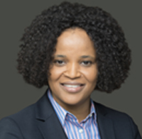
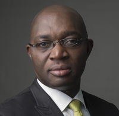
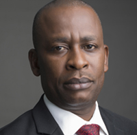

Leadership
Mr. Aigboje Aig-Imoukhuede - Chairman
Mr. Aigboje Aig-Imoukhuede is a seasoned banker whose career spans over two decades. He spent over 10 years at Guaranty Trust Bank Plc (GT Bank) and resigned in 2001 to lead a dynamic team of accomplished bankers as the Managing Director/Chief Executive Officer of Access Bank Plc. with the mandate to transform the bank into a world-class financial services provider. Mr. Aig-Imoukhuede's visionary leadership inspired Access Bank's rapid and unprecedented growth over the past decade and has seen the Bank develop to rank amongst the top four banks in Nigeria. He was awarded with the prestigious African Banker of the Year Award by IC Publications, publisher of the African Banker Magazine in 2013. In 2012, he emerged the winner of the "2011 Ernst & Young West Africa Entrepreneur of The Year" award. Aigboje has served the nation in different capacities where his contributions and insights have facilitated the achievement of set goals. This includes his current membership in the National Economic Management Team. He was awarded the prestigious National Honour, Commander of the Order of the Niger, in recognition of his contributions to the development of the Nigerian economy. Aigboje is an alumnus of Harvard Business School Executive Management Programme. He holds LLB and BL degrees from the University of Benin and the Nigeria Law School respectively. He is an honorary fellow of the Chartered Institute of Bankers of Nigeria.
Read More
Mr. Adamu Atta - Non-Executive Director
Mr. Adamu Atta is the Chief Executive, Matad Group Nigeria Ltd, an investment company with operations across Africa. He also sits on the Board of a number of first class companies. An astute business man with over two decade experience in financial management and consulting, he has developed an enviable portfolio of clients. His consultancy provides services for worldclass companies such as Shell, Nigerian National Petroleum Corporation (NNPC), Nigerian Liquefied Natural Gas Company (NLNG), First Bank of Nigeria Plc. and Lafarge Plc. amongst others. His involvements also extend into projects for the World Bank, UNICEF, DFID and HYSON mainly in the areas of infrastructure, financial services, capacity building, hospitality and tourism, housing, transportation and logistics. His other interests include textile and garments, cement, food and beverage production. He has also served on various Committees in Oil and Gas and Textile sectors and was a pioneer member of the Nigerian Business Forum. He holds a B.A. in International Relations and Economics and an MA in Development Economics from the United States International University
Read More

Mr. Barnabas Olise - Non-Executive Director
Mr. Barnabas Olise is the Managing Partner/CEO Of Enterprise Value Matrix Consult (EVMC) Limited, a multidisciplinary consultancy firm established in 2010. Olise's rich pool of work experience spans nearly two decades and covers Auditing, Consulting and Banking. Mr. Barnabas began his career in Deloitte, an international firm of Chartered Accountants as an audit trainee. He spent nearly a decade with the firm and gained cognate experience in auditing companies operating in virtually every sector of the Nigerian economy. Following his stint at Deloitte, he joined former Intercontinental Bank (Now Access Bank Plc.) and facilitated the expansion of the Ghanaian subsidiary's branch expansion to 28 outlets. He served as the Bank's Group Head, Project Management and later Group Executive, Management Services and Franchise Expansion before resigning from the Bank to set up a consultancy.Mr. Barnabas holds a BSc. in Mathematics from the University of Ibadan and is a Fellow of the Charted Institute of Accountants of Nigeria (ICAN).
Read More
Ms. Chizoba Ufoeze - Non-Executive Director
Ms. Chizoba Ufoeze is an Investment Analyst with over two decades of experience in the financial services industry. She began her career as a Research Assistant with African Development Consulting Group and an Investment Officer with African Development Bank. She also worked with BGL Limited as an Investment Analyst and then as the Head of Investments of the Wealth Management Group. She is currently the CEO of United Alliance Company of Nigeria Limited. Ms. Ufoeze is a graduate of the University of Nigeria Nsukka and has an MSc in Investment Management from the City University Business School London, and an MBA from the Middlesex University Business School, London. Ms. Ufoeze brings on board significant investment and wealth management experience.
Read More
Mr. Bababode Osunkoya - Independent Non-Executive Director
Mr. Bode Osunkoya is a Chartered Accountant with over two decades of cognate post-qualification experience in Banking, Audit, Accountancy, Taxation, Business and Financial Advisory. Bababode commenced his training with the firm of Z. O. Ososanya & Co (Chartered Accountants) where he qualified as a Chartered Accountant in 1986. After some years he moved to Abacus Merchant Bank Limited and thereafter Konsuma Credit Limited, where he honed his financial skills. In 1994, he founded Bababode Osunkoya & Co. (Chartered Accountants), a firm he nurtured until 2008 when he became a partner in Abax-OOSA Professionals, a firm of Chartered Accountants, formed by a merger with three other firms. Bababode served two consecutive tenures as Managing Partner, before reverting to Senior Partner in 2012. Mr. Osunkoya is a 1984 graduate of the Department of Accounting, University of Lagos. He is a Fellow of the Institute of Chartered Accountants of Nigeria (ICAN), a Fellow of the Chartered Institute of Taxation of Nigeria (CITN), and an Associate Member of the Institute of Directors (IoD). In March, 2010, he became one of the first batches of Certified Forensic Accountants of the Institute of Chartered Accountants of Nigeria. Bode is a member of the Public Practice Monitoring Committee of the Institute of Chartered Accountants of Nigeria.
Read More
Mrs Ifeyinwa Osime - Independent Non-Executive Director
Mrs. Ifeyinwa Osime is a partner at McPherson Legal Practitioners, a firm of Barristers and Solicitors in Nigeria. Called to the Nigerian Bar in 1987, she has several years of professional experience in the practice of Law and Insurance. She possesses substantial Board-level experience and had at different times served on the Boards of Bank PHB Plc. (now Keystone Bank Limited), Insurance PHB Limited (now KBL Insurance Ltd) and PHB Healthcare Limited (now KBL Healthcare Ltd) of which she was the Chairperson. She was the Company Secretary of African Development Insurance Company Limited from 1989 to 1997 where in addition to Company Secretarial duties; she had oversight for claims settlement. Married with two children, she is passionate about children and people with special needs. This passion has led to the establishment of a special needs program which offers support, therapy and counselling to people with special needs (developmental delays) and their families. Mrs. Osime holds a Law Degree (LL.B) and a Masters of Laws (LL.M) in Commercial & Corporate Law from the University of Benin and the London School of Economics respectively. She is a Barrister at Law (BL) of the Supreme Court of Nigeria and an Alumnus of the Executive Business Programs of the Harvard Business School and the Insead Graduate Business School.
Read More

Mr. Olusegun Ogbonnewo - Non-Executive Director
Mr. Olusegun Ogbonnewo is a Director in TenGen Holdings Limited with over 27 years’ professional experience in the financial service industry cutting across banking, human capital development, operations, payment systems and financial technology. Until his retirement in March 2017 he was a General Manager and Group Head Channels Services (E-Banking) of Access Bank Plc where he worked meritoriously for over 10years. While in the Bank, he played a vital role in the successful implementation of Access Bank Plc’s operations transformation program which was key to the seamless absorption of Intercontinental Bank Plc into the Bank’s operations. Mr. Olusegun Ogbonnewo has a BA (Ed) and Master of Public Administration (MPA) from the University of Ilorin and Master of Business Administration (MBA) from Lagos Business School/IESE Barcelona. He is an alumnus of the Harvard Business School, and has also attended management development programs in IDI Dublin, INSEAD and IMD amongst others. Mr. Olusegun Ogbonnewo was appointed to the Board of Directors of Wapic Insurance Plc on October 25, 2017. This appointment has been communicated to NAICOM and the formal approval of the Commission is being awaited.
Read More
Adeyinka Adekoya - Managing Director
Mrs. Adekoya started her professional career with Lambert Willis & Associate (Insurance Brokers). She spent 23 years at Law Union and Rock where she rose through the ranks gathering experience in the technical department. Prior to joining Wapic, Mrs. Adekoya was the Head Institutional Business Development Division at Cornerstone Insurance. She was appointed Managing Director of Wapic Insurance Plc on November 1, 2015. Mrs. Adekoya has a Bachelor of Science and Masters of Business Administration both from the University of Lagos. She is a Fellow of the Chartered Insurance Institute of Nigeria and an Associate of the Chartered Insurance Institute, London.
Read More
Oyebode Ojeniyi - Executive Director
Oyebode Ojeniyi is an Executive Director. He is a consummate professional with over two decades of experience in financial services and principally in Banking. His experience covers Banking Operations (Domestic & International), Sales and Business Development, Structured Financing and Risk Management, Private Equity Investments, General Administration, Risk Assessment Reviews and Audit, Training and People Development. Prior to his appointment at Wapic Insurance, Bode was the Deputy General Manager and Regional Head for Business Banking at the South West region of Access Bank Plc. He had also worked at Eco Bank Nigeria Plc for over a decade and half during which period he held various key management positions. He represented Ecobank on the Bankers Sub-Committee on SMEEIS as well as on the Presidential Advisory Committee on SMEEIS and Microfinance. Bode brings a wealth of deep technical and business development experience to the Board. He holds a Bachelor of Science Degree and a Masters of Science Degree in Agricultural Economics from the University of Ibadan. He also has a Masters in Business Administration from Ogun State University. Mr. Ojeniyi is a Fellow of the Institute of Credit Administration of Nigeria and the Institute of Strategic Management of Nigeria. He is a Member of the Chartered Insurance Institute (UK) and an Honorary Senior Member of the Chartered Institute of Bankers of Nigeria.
Read More
Olufemi Obaleke - Executive Director, Subsidiaries
Olufemi Obaleke is Executive Director, Subsidiaries. He brings on board over two decades of experience from a number of leading Banks in Nigeria including Access Bank Plc where was he was General Manager Business Banking until he joined Wapic Insurance Plc. His wealth of experience covers Sales, Business Development, International Operations and Branch Expansion. In his new role, Femi will deepen and develop the Company’s relationship in the commercial and government segments within the Nigerian insurance landscape drawing on his wide industry experience. Femi is a member of the Chartered Institute of Bankers (HCIB). He holds a B. Ed. in Management Economics from the University of Ibadan and an MBA from Abubakar Tafawa Balewa University. He has attended many professional and Executive Management development programs in leading Business Schools locally and internationally.
Read More
Peter Ehimhen - Executive Director, Technical
Mr. Peter Ehimhen joined Wapic Insurance Plc on September 2012 and until this appointment as Executive Director Technical Operations, was the Chief Risk Officer of the Company. He has a Bachelor of Science (B.Sc.) in Insurance from Enugu State University of Science and Technology, and a Master’s in Business Administration (MBA) from the University of Nigeria, Nsukka. Mr. Ehimhen also has a Masters’ of Science (M.Sc.) in Risk Management, from the Glasgow Caledonian University, UK, and has over 24 years’ post-qualification experience, of which over 12 years has been in the insurance industry. Mr. Peter Ehimhen is an Associate of the Chartered Insurance Institute of Nigeria and a Member of the Institute of Risk Management. His appointment was approved by NAICOM on December 5, 2017.
Read More
Adedayo Arowojolu - Managing Director, Wapic Ghana
Adedayo Arowojolu has several years’ experience in insurance with expertise in sales, and is knowledgeable in underwriting, claims administration and reinsurance. Adedayo has Bachelors and Masters degrees from the University of Ibadan. He also holds a Masters in Business Administration. Adedayo worked at Royal Exchange Insurance for over 14 years before he joined the corporate sales team of Wapic Insurance in 2013.
Read More

Zina Giwa Amu - Head, Digital & Technology Services Division
Zina Y. Giwa-Amu is an experienced professional who has trained and worked in various roles globally. Zina has spent most of her career working on growth, strategic alignment and operational performance with several fortune 500 companies, first as a consultant with PricewaterhouseCoopers (USA) and then with Hewlett Packard (USA). Zina heads the Digital & Technology Services Division, comprising of Information Technology Group and Channels / eBusiness Group. She is a Lawyer by profession, called to the Nigerian Bar in 1992, and trained in the Financial Services Law Masters program at the Chicago-Kent College of Law.
Read More

Aina Akintonde - Head, Service and Fulfillment
Aina Akintonde is the Head, Service and Fulfillment. Aina has over 23years experience in Financial Services in various functions including Corporate Sales, Foreign Funds Transfer, Contact Center, Operations and Products & Segments management. She was strategic to service delivery and the transformation of the contact center at Access Bank Plc. She spent 12years at MBC International Bank, which later became part of the First Bank Group. She graduated from Reading University, United Kingdom with a B.A in International Relations & Economics. She also holds a Masters in Business Administration (MBA) from Obafemi Awolowo University Ile- Ife. She has several Professional development certificates from prestigious institutions such as Harvard Business School, INSEAD and the Wharton Business School.
Read More

Patrick Osadebe - Head, Retail Sales & Distribution Division
Patrick Osadebe heads the Retail Sales & Distribution Division at Wapic Insurance. He has over 2 decade working experience in the financial services sector. Before joining Wapic Insurance, he was at various times Group Head, Business Banking Division – South and Head, Business Development and Planning – Subsidiaries at Access Bank Plc. Patrick is a graduate of Computer Science and holds an MBA Degree from the University of Benin.
Read More
Mary Agha - Company Secretary/Legal Adviser
Mary Agha is a Law graduate of the University of Ibadan. She has worked as company secretary for organizations such as Lead Capital Plc. and Intercontinental Bank Plc. She worked in the Company Secretariat and Subsidiaries legal services department of Access Bank, before joining Wapic Insurance.
Read More
Oluseyi Taiwo - Head, Financial Control
Oluseyi Taiwo is a Chartered accountant and a graduate of the University of Benin, Nigeria. Seyi has experience in Tax and Cost Management, Financial reporting and Financial Control. Prior to joining Wapic, Seyi worked for organizations such as Intercontinental Bank and Access Bank Plc.
Read More
Muyiwa Oke - Head, Internal Control
Muyiwa Oke heads the Compliance and Internal control function at Wapic Insurance. He has over a decade’s working experience in the financial services sector with Citibank Nigeria Limited and Access Bank. His extensive experience cuts across various Banking operations departments like Customer Service, Quality Assurance, Business Process Review and Improvement. Muyiwa is a graduate of Engineering from the Federal University of Technology Akure.
Read More

Sunny Ogbemudia - Chief Internal Auditor
Sunny Ogbemudia supervises the audit function of WAPIC Insurance Group covering all subsidiaries. He also supervises and coordinates the outsourced activities of WAPIC’s external audit firms. Sunny is an Accountancy graduate of the University of Maiduguri, he holds a Masters in Business Administration degree from the University of Benin. Sunny has worked with Akintola Willaims Deloitte (Chartered Accountants), Wema Bank, Ecobank and Access Bank Plc.
Read More

Adewale Koko - Head, Oil and Gas
Adewale Koko holds a Higher National Diploma (HND) in Insurance, a Post Graduate Diploma in Management from the University of Calabar and a Master’s in Business Administration degree from the University of Calabar. He has many years of experience in insurance underwriting and is an Associate of the Chartered Insurance Institute of Nigeria. He has attended several courses and seminars both locally and internationally. Prior to his appointment with Wapic, Adewale was the Group Head, Oil and Gas with Standard Alliance Insurance where he managed several International Oil Companies (IOCs) and marginal field players in Nigeria.
Read More
Wapic Insurance Plc is fully committed to implementing best practice standards in Corporate Governance. The Company recognizes that Corporate Governance and Practices must balance two goals of protecting the interest of Shareholders and providing for the duty of the Board and Management to direct and manage the affairs of the Company.
In line with our group framework, we have strengthened the corporate governance arrangements of the Company by increasing the Board Committees from four (4) to five (5), namely:
Board Audit and Compliance Committee
- Purpose - The Committee assists the Board in fulfilling its oversight responsibility relating to the integrity of the Company’s financial statements and the financial reporting process; the independence and performance of the Company’s internal and external auditors; and the Company's system of internal control and mechanism for receiving complaints regarding the Company’s accounting and operating procedures
- Membership – Three (3) Non-Executive Directors
- Frequency of meetings – At least once every quarter
Board Enterprise Risk Management and Governance Committee
- Purpose – The Committee assists the Board in fulfilling its oversight responsibility relating to establishment of policies, standards and guidelines for risk management, governance and compliance with legal and regulatory requirements in the Company
- Membership – Seven (7) members comprising of Five (5) Non-Executive Directors and Two (2) Executive Directors
- Frequency of meetings – At least once every quarter
Board Finance, Investment and General Purpose Committee
- Purpose – The Committee assists the Board in fulfilling its oversight responsibility relating to management of the Company’s exposure to financial risk; management of the Company’s business plan, cash plan, balance sheet and capital structure; the Company’s capital allocation strategy, including the cost of capital; the quality of the Company’s investment portfolio and the trends affecting the portfolio; the effectiveness and administration of investment related policies including compliance with legal investment limits and the Company’s in-house investment restrictions; and providing oversight and guidance to the Company regarding all aspects of implementing the NAICOM Guidelines and compliance with other regulatory Risk based supervision framework.
- Membership – Eight (8) members comprising of Five (5) Non-Executive Directors and Three (3) Executive Directors
- Frequency of meetings – At least once every quarter
Board Establishment and Remuneration Committee
- Purpose – To advise the Board on its oversight responsibilities in relation to remuneration, other human resource matters affecting the Directors and employees of the Company and all other general matters. Specifically, the Committee is responsible for determining and executing the processes for board appointments, removal of non-performing directors and recommending appropriate remuneration for directors (both executive and non-executive) and approving remuneration for all other staff
- Membership – Four (4) Non-Executive Directors
- Frequency of meetings – At least once every quarter
Board Information Technology Committee
- Purpose – To assist the Board in fulfilling its governance and oversight responsibilities relating to development, periodic review and implementation of the Company’s Information Technology strategy; monitoring the Company’s investments and operations in relation to technology and information systems; and ensuring that the Company’s technology initiatives are consistent with the Company’s overall corporate strategy
- Membership – Four (4) members comprising of Three (3) Non-Executive Directors and One (1) Executive Director
- Frequency of meetings – At least once every quarter
The over-arching goal is to ensure better strategic oversight by the Board and a more in-depth approach to Corporate Governance in the Company. Members of the Board of Directors attend regular trainings on Corporate Governance and related issues both at local and international levels. In addition, the Company Secretary provides advice to the Board on Corporate Governance best practices from time to time.